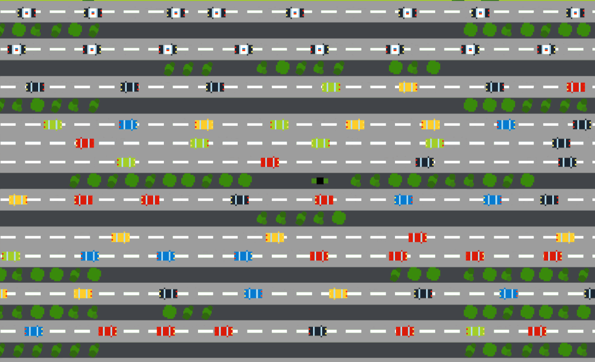
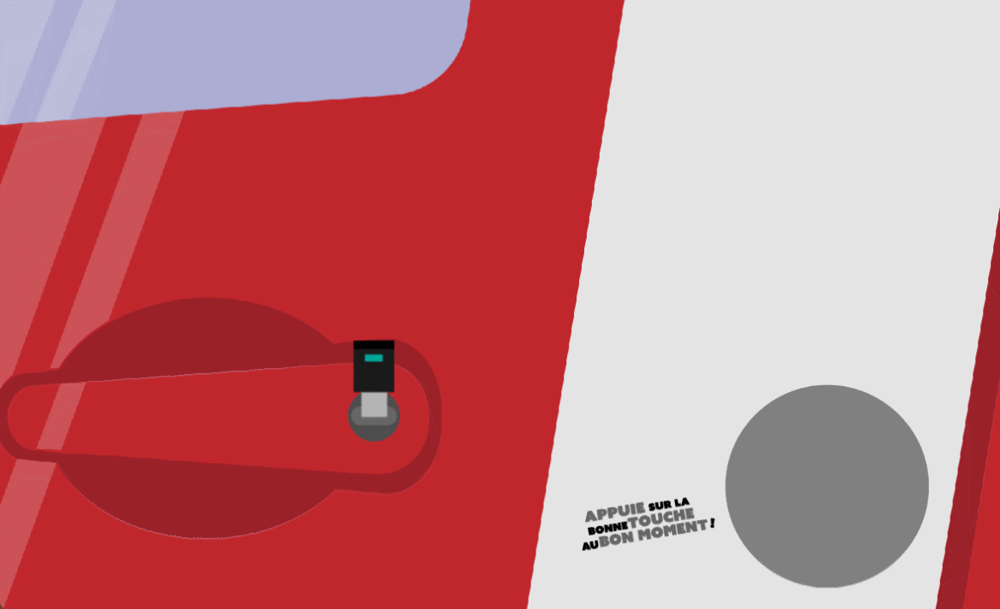

Thief Tales
The second game jam we made in collaboration with ENSEIRB was at the end of my second year of DHE. It led to the creation of Thief Tales a compilation of mini game packed inside a thief story.




I mainly worked on the race game and it was super fun to do because it looked a lot like Those Who Remain, a previous game we made in school with some friends. This time it took me way less time and I knew how to proceed from the start.
Discover the game